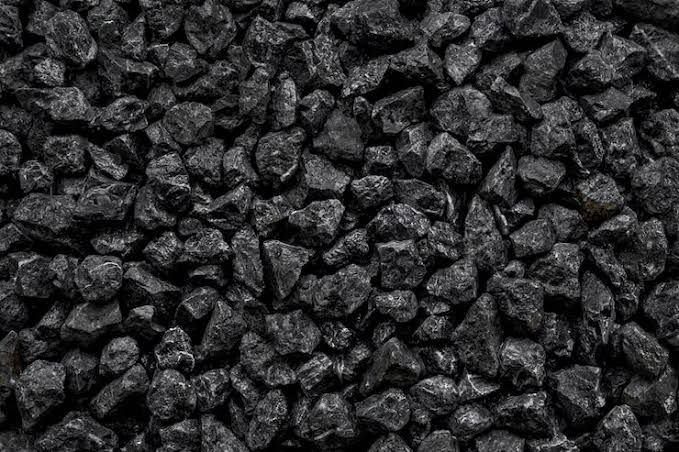
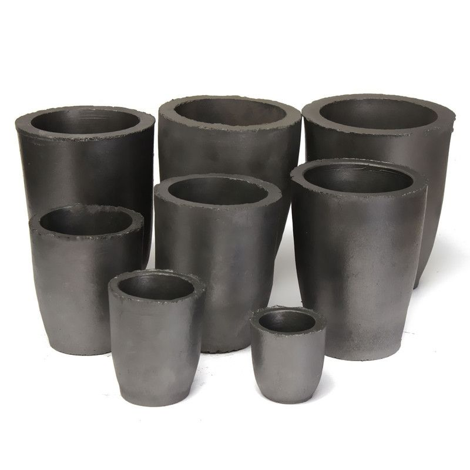
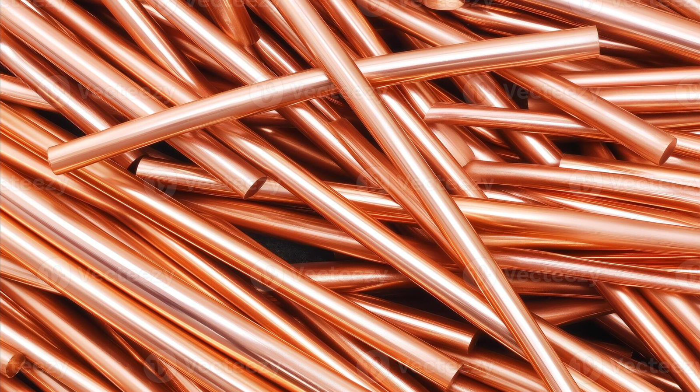
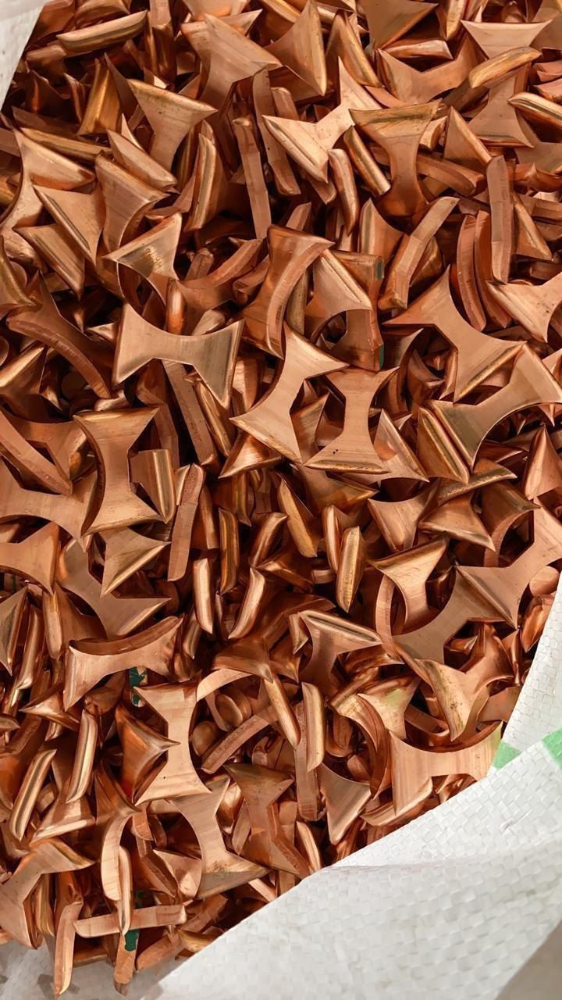
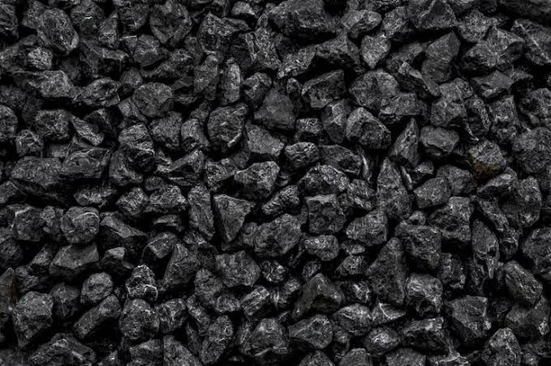
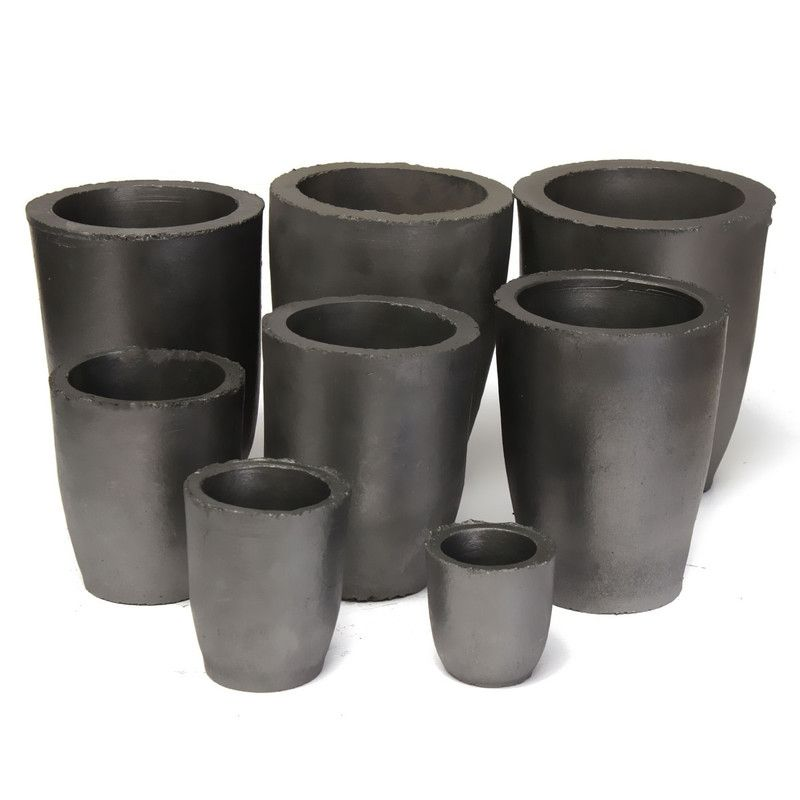
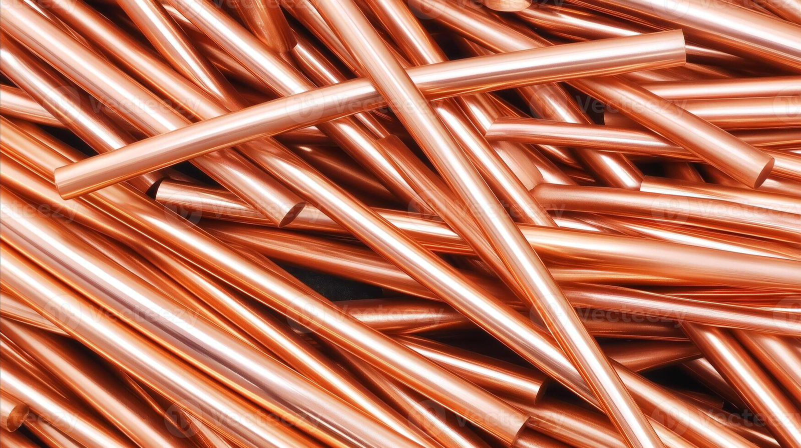
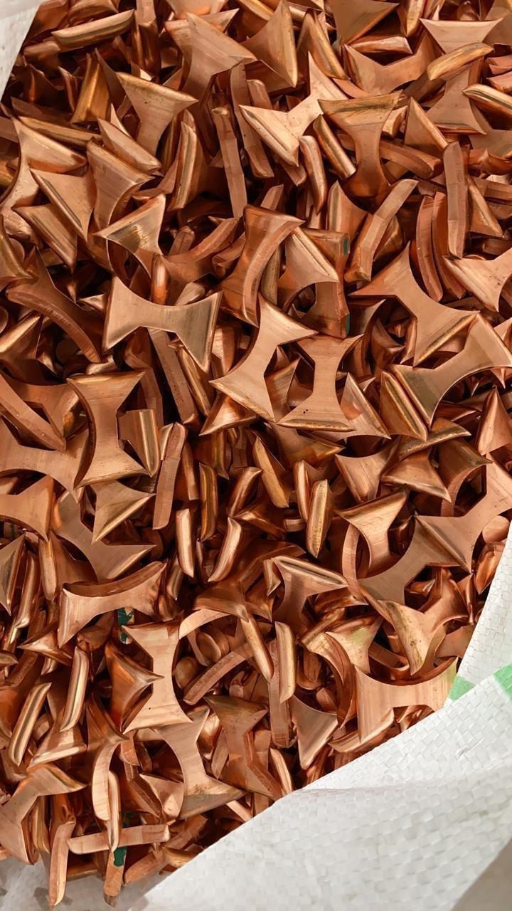

About Us
Industrial Goods Supplier
Avishkar Traders are well known suppliers in the black coal business, dedicated to providing high-quality coal products for various industrial applications. With years of experience, we ensure reliable supply and exceptional service to our clients, we also supply pure copper and crucibles.Our Products
We specialize in premium black coal, sourced from trusted mines and processed to meet the highest quality standards. Our coal is ideal for industrial use, including energy production and manufacturing processes, we also provide pure copper and crucibles.
 







Tradition of Coal in Silver and Gold Business
Coal has played a crucial role in the silver and gold industries for centuries. It is traditionally used in smelting furnaces to provide the intense heat required for extracting and refining precious metals from ores, making it an essential component in metallurgical processes.
Coal has long been used in traditional gold and silver smelting as both a fuel and a reducing agent. It helped generate the high temperatures needed to melt metal ores and played a key role in separating pure metals from impurities. Charcoal, a refined form of coal, was especially common in ancient furnaces and artisan workshops across India, Europe, and China. Its use was not only practical but often tied to ritual and craftsmanship passed down through generations.
Contact Information
GST Number:27BVRPM7412D1ZE
Mobile No: +91 8167671777
Email: avishkar.3030@gmail.com
Location: Visit Us - Avishkar Traders ,Shree chauk ,near Patankar Hospital, Hupari